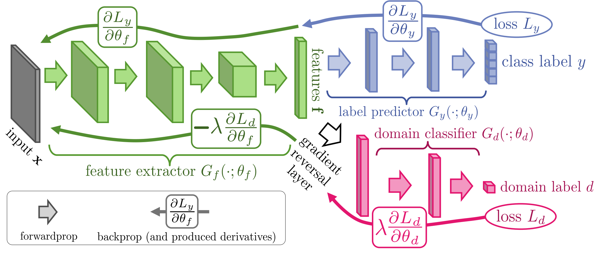
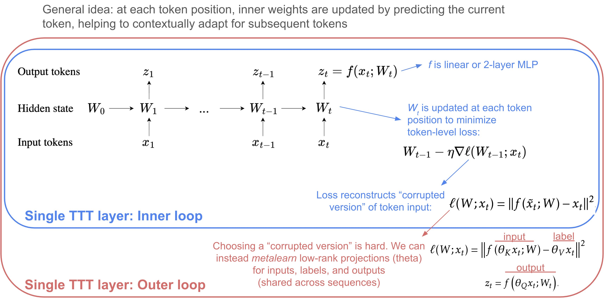

7.8. transfer learning#
See also notes on 📌 causal inference for some close connections.
For neural-net specific transferring see 📌 adaption/transfer.
7.8.1. overviews#
 (from this paper)
(from this paper)
7.8.2. domain adaptation algorithms#
Domain test bed available here, for generalizating to new domains (i.e. performing well on domains that differ from previous seen data)
Empirical Risk Minimization (ERM, Vapnik, 1998) - standard training
Invariant Risk Minimization (IRM, Arjovsky et al., 2019) - learns a feature representation such that the optimal linear classifier on top of that representation matches across domains.
distributional robust optimization
instead of minimizing training err, minimize maximum training err over different perturbations
Group Distributionally Robust Optimization (GroupDRO, Sagawa et al., 2020) - ERM + increase importance of domains with larger errors (see also papers from Sugiyama group e.g. 1, 2)
minimize error for worst group
Variance Risk Extrapolation (VREx, Krueger et al., 2020) - encourages robustness over affine combinations of training risks, by encouraging strict equality between training risks
Interdomain Mixup (Mixup, Yan et al., 2020) - ERM on linear interpolations of examples from random pairs of domains + their labels
Marginal Transfer Learning (MTL, Blanchard et al., 2011-2020) - augment original feature space with feature vector marginal distributions and then treat as a supervised learning problem
MAML (finn, abbeel, & levine, 2017) - minimize parameters for metalearning including finetuning as part of the process (intuitively, find parameters that improve performance on a task after finetuning on that task)
\(\min _\theta \underbrace{\mathbb{E}_\tau }_{\text{average over tasks } \tau}\left[\mathcal{L}_\tau\left(\underbrace{U_\tau(\theta)}_{\text{finetuned model}}\right)\right]\)
compute finetuned models then take gradient wrt to held-out samples from the same tasks
Meta Learning Domain Generalization (MLDG, Li et al., 2017) - use MAML to meta-learn how to generalize across domains
learning more diverse predictors
Representation Self-Challenging (RSC, Huang et al., 2020) - adds dropout-like regularization to important features, forcing model to depend on many features
Spectral Decoupling (SD, Pezeshki et al., 2020) - regularization which forces model to learn more predictive features, even when only a few suffice
embedding prior knowledge
Style Agnostic Networks (SagNet, Nam et al., 2020) - penalize style features (assumed to be spurious)
Penalizing explanations (Rieger et al. 2020) - penalize spurious features using prior knowledge
Domain adaptation under structural causal models (chen & buhlmann, 2020)
make clearer assumptions for domain adaptation to work
introduce CIRM, which works better when both covariates and labels are perturbed in target data
kernel approach (blanchard, lee & scott, 2011) - find an appropriate RKHS and optimize a regularized empirical risk over the space
In-N-Out (xie…lang, 2020) - if we have many features, rather than using them all as features, can use some as features and some as targets when we shift, to learn the domain shift
Prospective Learning: Learning for a Dynamic Future (de silva…voelstein, chaudhari, 2024)
define prospective learning as setting where optimal hypothesis changes over time (like multi-task, meta-, continual, and lifelong learning)
introduce prospective ERM, which is shown to be consistent (unlike standard empirical risk minimization from PAC learning) - basically, incorporates time as an input in addition to the data
7.8.2.1. domain invariance#
key idea: want repr. to be invariant to domain label

same idea is used to learn fair representations, but domain label is replaced with sensitive attribute
Domain Adversarial Neural Network (DANN, Ganin et al., 2015)
Conditional Domain Adversarial Neural Network (CDANN, Li et al., 2018) - variant of DANN matching the conditional distributions across domains, for all labels
Deep CORAL (CORAL, Sun and Saenko, 2016) - match mean / covariance of feature distrs
Maximum Mean Discrepancy (MMD, Li et al., 2018)
adversarial discriminative domain adaptation (ADDA tzeng et al. 2017)
balancing with importance weighting
Learning Robust Representations by Projecting Superficial Statistics Out (wang et al. 2019)
7.8.2.2. feature learning#
https://arxiv.org/pdf/2212.07346.pdf (zhang & bottou, 2022) - during training, concatenate the representations obtained with different random seeds
7.8.2.3. dynamic selection#
Dynamic Selection (DS) refers to techniques in which, for a new test point, pre-trained classifiers are selected/combined from a pool at test time review paper (cruz et al. 2018), python package
define region of competence
clustering
kNN - more refined than clustering
decision space - e.g. a model’s classification boundary, internal splits in a model
potential function - weight all the points (e.g. by their distance to the query point)
criteria for selection
individual scores: acc, prob. behavior, rank, meta-learning, complexity
group: data handling, ambiguity, diversity
combination
non-trainable: mean, majority vote, product, median, etc.
trainable: learn the combination of models
related: in mixture of experts models + combination are trained jointly
dynamic weighting: combine using local competence of base classifiers
Oracle baseline - selects classifier predicts correct label, if such a classifier exists
7.8.2.4. test-time adaptation#
test-time adaptation
test-time augmentation
batch normalization (AdaBN, li…hou, 2016)
label shift estimation (BBSE, lipton, wang, & smola, 2018) - \(p(y)\) shifts but \(P(x|y)\) does not
entropy minimization (test-time entropy minimization, TENT, wang…olshausen, darrel, 2020) - optimize for model confidence (entropy of predictions), using only norm. statistics and channel-wise affine transformations
Test-Time Prompt Tuning for Zero-Shot Generalization in Vision-Language Models (shu…anandkumar, xiao, 2022) - optimize prompt to minimize the entropy with confidence selection so that the model has consistent predictions across different augmented views of each test sample
combining train-time and test-time adaptation: Adaptive Risk Minimization (ARM, zhang et al., 2020) - combines groups at training time + batches at test-time
meta-train the model using simulated distribution shifts, which is enabled by the training groups, such that it exhibits strong post-adaptation performance on each shift
TTT: Test-Time Training with Self-Supervision for Generalization under Distribution Shifts (sun…efros, hardt. 2020) - at test-time, update parameters for self-supervised rotation prediction task then use for classification
TTT with masked autoencoders (gandelsman, sun, …, efros, 2022) - use reconstructed with masked autoencoder and improve performance on robustness tasks
Test-Time Training on Video Streams (wang, sun, …, efros, wang, 2023) - use masked autoencoder per-frame and incrementally update across each frame
M-TTT: Learning to (Learn at Test Time) (sun, li, dalal, …guestrin, 2024)
analysis
TTT for Reading Comprehension (banerjee et al. 2021) - uses self-supervision to train models on synthetically generated question-answer pairs, and then infers answers to unseen human-authored questions for this context
TTT++: When Does Self-Supervised Test-Time Training Fail or Thrive? (liu et al. 2021) - explore different test-time adaptation methods and combine Test-time feature alignment with Test-time contrastive learning
Never Train from Scratch: Fair Comparison of Long-Sequence Models Requires Data-Driven Priors (amos, berant, & gupta, 2024) - when transferring to a specific task, should first finetune the LM on the task before doing supervised finetuning
7.8.3. adv attacks#
Adversarial Attacks and Defenses in Images, Graphs and Text: A Review (xu et al. 2019)
attacks
fast gradient step method - keep adding gradient to maximize noise (limit amplitude of pixel’s channel to stay imperceptible)
Barrage of Random Transforms for Adversarially Robust Defense (raff et al. 2019)
DeepFool: a simple and accurate method to fool deep neural networks (Moosavi-Dezfooli et. al 2016)
defenses
Adversarial training - training data is augmented with adv examples (Szegedy et al., 2014b; Madry et al., 2017; Tramer et al., 2017; Yu et al., 2019)
- \[\min _{\boldsymbol{\theta}} \frac{1}{N} \sum_{n=1}^{N} \operatorname{Loss}\left(f_{\theta}\left(x_{n}\right), y_{n}\right)+\lambda\left[\max _{\|\delta\|_{\infty} \leq \epsilon} \operatorname{Loss}\left(f_{\theta}\left(x_{n}+\delta\right), y_{n}\right)\right]\]
this perspective differs from “robust statistics” which is usually robustness against some kind of model misspecification/assumptions, not to distr. shift
robust stat usually assumes a generative distr. as well
still often ends up with the same soln (e.g. ridge regr. corresponds to certain robusteness)
Stochasticity: certain inputs or hidden activations are shuffled or randomized (Xie et al., 2017; Prakash et al., 2018; Dhillon et al., 2018)
Preprocessing: inputs or hidden activations are quantized, projected into a different representation or are otherwise preprocessed (Guo et al., 2017; Buckman et al., 2018; Kabilan et al., 2018)
Manifold projections: an input sample is projected in a lower dimensional space in which the neural network has been trained to be particularly robust (Ilyas et al., 2017; Lamb et al., 2018)
Regularization in the loss function: an additional penalty term is added to the optimized objective function to upper bound or to approximate the adversarial loss (Hein and Andriushchenko, 2017; Yan et al., 2018)
constraint
robustness as a constraint not a loss (Constrained Learning with Non-Convex Losses (chamon et al. 2021))
- \[\begin{split}\begin{aligned} \min _{\boldsymbol{\theta}} & \frac{1}{N} \sum_{n=1}^{N} \operatorname{Loss}\left(f_{\theta}\left(x_{n}\right), y_{n}\right) \\ \text { subject to } & \frac{1}{N} \sum_{n=1}^{N}\left[\max _{\|\delta\|_{\infty} \leq \epsilon} \operatorname{Loss}\left(f_{\theta}\left(\boldsymbol{x}_{n}+\delta\right), y_{n}\right)\right] \leq c \end{aligned}\end{split}\]
when penalty is convex, these 2 problems are the same
a possible defense against adversarial attacks is to solve the anticausal classification problem by modeling the causal generative direction, a method which in vision is referred to as analysis by synthesis (Schott et al., 2019)
robustness vs accuracy
robustness may be at odds with accuracy (tsipiras…madry, 2019)
Precise Tradeoffs in Adversarial Training for Linear Regression (javanmard et al. 2020) - linear regression with gaussian features
use adv. training formula above
Theoretically Principled Trade-off between Robustness and Accuracy (Zhang, …, el ghaoui, Jordan, 2019)
adversarial examples
Decision Boundary Analysis of Adversarial Examples (He, Li, & Song 2019)
Natural Adversarial Examples (Hendrycks, Zhao, Basart, Steinhardt, & Song 2020)
Image-Net-Trained CNNs Are Biased Towards Texture (Geirhos et al. 2019)
adversarial transferability
Transferability in Machine Learning: from Phenomena to Black-Box Attacks using Adversarial Samples (papernot, mcdaniel, & goodfellow, 2016)
Ensemble Adversarial Training: Attacks and Defenses (tramer et al. 2018)
Improving Adversarial Robustness via Promoting Ensemble Diversity (pang et al. 2019)
encourage diversity in non-maximal predictions
robustness
smoothness yields robustness (but can be robust without smoothness)
margin idea - data points close to the boundary are not robust
we want our boundary to go through regions where data is scarce